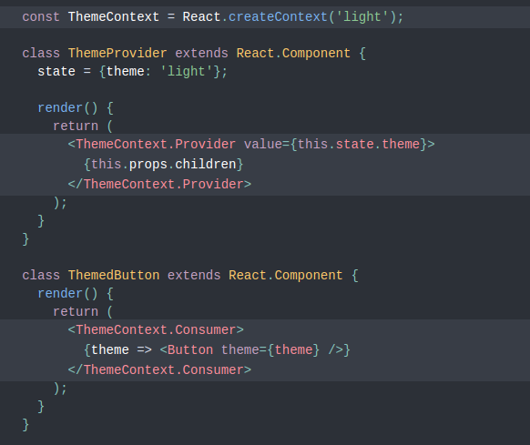

React 2019
by Bruno Nardini
Ops!
Reveal.js + highlight.js turns jsx tag to lowercase
But remember: the first letter of components are always in uppercase
React 15.6.2
Switch all packages from
BSD + Patents to MIT license
React v16.0
Fragments, error boundaries, portals, support for custom DOM attributes, improved server-side rendering, and reduced file size.
Error Boundaries
React 16 introduces a new concept of an “error boundary”.
class ErrorBoundary extends React.Component {
constructor(props) {
super(props);
this.state = { hasError: false };
}
componentDidCatch(error, info) {
// Display fallback UI
this.setState({ hasError: true });
// You can also log the error
// to an error reporting service
logErrorToMyService(error, info);
}
render() {
if (this.state.hasError) {
// You can render any custom fallback UI
return Something went wrong.
;
}
return this.props.children;
}
}
render() {
return (
I was successfully rendered
)
}
Oh Yeah, Fragments!
render() {
return (
First item ,
Second item ,
Third item ,
);
}
You can now return an array of elements:
render() {
return [
/* Don't forget the keys :) */
First item ,
Second item ,
Third item ,
];
}
And strings:
render() {
return 'Look ma, no spans!';
}
Portals
Portals provide a first-class way to render children into a DOM node that exists outside the DOM hierarchy of the parent component.
render() {
return ReactDOM.createPortal(
this.props.children,
domNode,
);
}
React v16.3.0
New lifecycles and context API
Official Context API
React Context or Redux?
React Profiler
React 16.5 adds support for a new DevTools profiler plugin.


Component Lifecycle Changes
Deprecation warning (will be removed in 17.0):
- componentWillMount
- componentWillReceiveProps
- componentWillUpdate
New lifecycles:
- getDerivedStateFromProps
- getSnapshotBeforeUpdate
Create React App 2.0
Babel 7, Sass, and more
- Updated to Babel 7, including support for the React fragment syntax and many bugfixes.
- Updated to Webpack 4, which automatically splits JS bundles more intelligently.
- We updated to Jest 23, which includes an interactive mode for reviewing snapshots.
- More styling options: you can use Sass and CSS Modules out of the box.
- Added PostCSS so you can use new CSS features in old browsers.
- You can now optionally get a smaller CSS bundle if you only plan to target modern browsers.
- Service workers are now opt-in and are built using Google’s Workbox.
- You can use Apollo, Relay Modern, MDX, and other third-party Babel Macros transforms.
- You can now import an SVG as a React component, and use it in JSX.
React v16.6.0
lazy, memo and contextType
React.memo
const MyComponent = React.memo(function MyComponent(props) {
/* render using props */
});
class MyComponent extends React.PureComponent {
render() {
/* render using this.props and this.state */
}
});
é igual a
const MyComponent = React.memo(function MyComponent(props) {
/* render using props */
});
PureComponent e memo
executam uma comparação
juntos e shallow now
entre props e state
React.lazy
Code-Splitting with Suspense
import React, { lazy, Suspense } from 'react';
const OtherComponent = lazy(() => import('./OtherComp'));
function MyComponent() {
return (
<Suspense fallback={<div>Loading...</div>}>
<OtherComponent />
</Suspense>
);
}
Class.contextType
class MyClass extends React.Component {
static contextType = MyContext;
}
ou
class MyClass extends React.Component {
}
MyClass.contextType = MyContext;
class MyClass extends React.Component {
static contextType = MyContext;
componentDidMount() {
let value = this.context;
/* perform a side-effect at mount
using the value of MyContext */
}
componentDidUpdate() {
let value = this.context;
/* ... */
}
componentWillUnmount() {
let value = this.context;
/* ... */
}
render() {
let value = this.context;
/* render something based on the value of MyContext */
}
}
static getDerivedStateFromError()
static getDerivedStateFromError(error)
class ErrorBoundary extends React.Component {
constructor(props) {
super(props);
this.state = { hasError: false };
}
static getDerivedStateFromError(error) {
/* Update state so the next render
will show the fallback UI. */
return { hasError: true };
}
render() {
if (this.state.hasError) {
// You can render any custom fallback UI
return ;
}
return this.props.children;
}
}
React v16.8
The One With Hooks
What Are Hooks?
Hooks let you use state and other React features without writing a class. You can also build your own Hooks to share reusable stateful logic between components.
-
Basic Hooks
- useState
- useEffect
- useContext
-
Additional Hooks
- useReducer
- useCallback
- useMemo
- useRef
- useImperativeHandle
- useLayoutEffect
- useDebugValue
useState
Returns a stateful value, and a function to update it.
const [state, setState] = useState(initialState);
Handle state with class:
import React, { Component } from "react";
class Example extends Component {
state = { count: 0 };
handleCount = () => {
this.setState(prevState => ({
count: prevState.count + 1
}));
}
render() {
return (
You clicked {this.state.count} times
<button onClick={this.handleCount}>
Click me
</button>
);
}
}
Handle state with function:
import React, { useState } from 'react';
function Example() {
const [count, setCount] = useState(0);
return (
<div>
<p>You clicked {count} times</p>
<button onClick={() => setCount(count + 1)}>
Click me
</button>
</div>
);
}
import React, { useState } from 'react';
function Example() {
const [count, setCount] = useState(0);
const handleCount = () => {
setCount(count + 1);
}
return (
<div>
<p>You clicked {count} times</p>
<button onClick={handleCount}>
Click me
</button>
</div>
);
}
useEffect
Accepts a function that contains imperative, possibly effectful code.
useEffect(didUpdate);
import React, { useState, useEffect } from 'react';
function Example() {
const [count, setCount] = useState(0);
useEffect(() => {
// Update the document title using the browser API
document.title = `You clicked ${count} times`;
});
return (
<div>
<p>You clicked {count} times</p>
<button onClick={() => setCount(count + 1)}>
Click me
</button>
</div>
);
}
import React, { Component } from "react";
class Example extends Component {
state = { count: 0 };
componentDidMount() {
const { count } = this.state;
document.title = `You clicked ${count} times`;
}
componentDidUpdate() {
const { count } = this.state;
document.title = `You clicked ${count} times`;
}
handleCount = () => {
this.setState(prevState => ({
count: prevState.count + 1
}));
}
render() {
// ...
}
}
function FriendStatus({ friend }) {
const [isOnline, setIsOnline] = useState(null);
useEffect(() => {
function handleStatusChange(status) {
setIsOnline(status.isOnline);
}
ChatAPI.subscribe(friend.id, handleStatusChange);
// Specify how to clean up after this effect:
return function cleanup() {
ChatAPI.unsubscribe(friend.id, handleStatusChange);
};
});
if (isOnline === null) {
return 'Loading...';
}
return isOnline ? 'Online' : 'Offline';
}
class FriendStatus extends React.Component {
state = { isOnline: null };
componentDidMount() {
ChatAPI.subscribeToFriendStatus(
this.props.friend.id,
this.handleStatusChange
);
}
componentWillUnmount() {
ChatAPI.unsubscribeFromFriendStatus(
this.props.friend.id,
this.handleStatusChange
);
}
handleStatusChange = (status) => {
this.setState({ isOnline: status.isOnline });
}
render() {
if (this.state.isOnline === null) {
return 'Loading...';
}
return this.state.isOnline ? 'Online' : 'Offline';
}
}
function FriendStatus({ friend }) {
const [isOnline, setIsOnline] = useState(null);
useEffect(() => {
function handleStatusChange(status) {
setIsOnline(status.isOnline);
}
ChatAPI.subscribe(friend.id, handleStatusChange);
// Specify how to clean up after this effect:
return function cleanup() {
ChatAPI.unsubscribe(friend.id, handleStatusChange);
};
}, [friend.id]);
if (isOnline === null) {
return 'Loading...';
}
return isOnline ? 'Online' : 'Offline';
}
function PlanPage() {
const [plans, setPlans] = useState([]);
useEffect(() => {
async function fetchPlans() {
const response = await fetch('http://myapi/plans');
const json = await response.json();
setPlans(json);
}
fetchPlans();
}, []);
return (
<ul>
{plans.map(plan => (
<li key={plan.id}>{plan.name}</li>
))}
</ul>
);
}
useContext
Accepts a context object and returns the current context value for that context.
const value = useContext(MyContext);
class UserAvatar extends React.Component {
return (
<AuthContext.Consumer>
{({ user }) => (
<ThemeContext.Consumer>
{theme => <Avatar src={user.img} theme={theme} />}
</ThemeContext.Consumer>
)}
</AuthContext.Consumer>
);
}
function UserAvatar() {
const { user } = useContext(AuthContext);
const theme = useContext(ThemeContext);
return (
<Avatar src={user.img} theme={theme} />
);
}
useReducer
An alternative to useState.
const [state, dispatch] =
useReducer(reducer, initialArg, init);
const initialState = { count: 0 };
function reducer(state, action) {
switch (action.type) {
case 'increment':
return { count: state.count + 1 };
case 'decrement':
return { count: state.count - 1 };
default:
return state;
}
}
function Counter() {
const [state, dispatch] =
useReducer(reducer, initialState);
return (
<>
Count: {state.count}
<button onClick={() => dispatch({type: 'increment'})}>
+ increment
</button>
<button onClick={() => dispatch({type: 'decrement'})}>
- decrement
</button>
</>
);
}
For more Hooks...
Read the docs:
https://reactjs.org/docs/hooks-reference.html